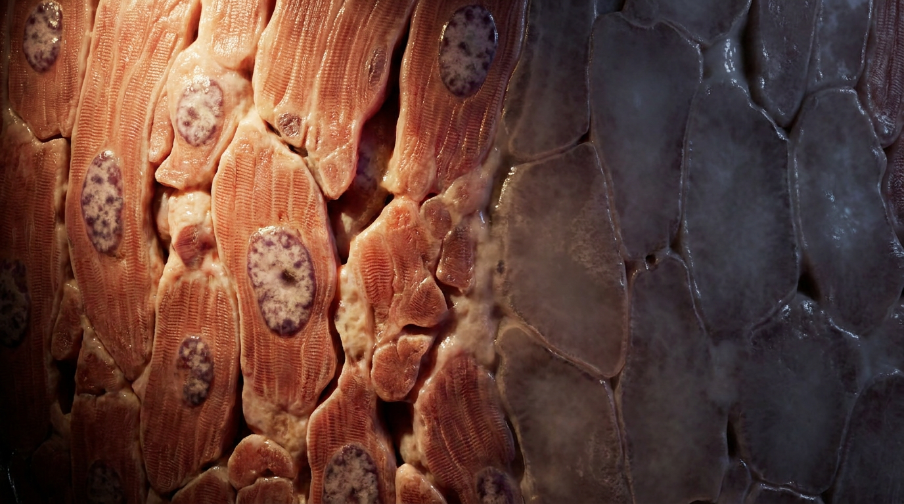

When a coronary artery occludes, the myocardium downstream does not die immediately. There is a window — roughly 20 to 40 minutes — during which the myocytes are ischemic but salvageable. After that, the damage becomes irreversible. The cell swells. The mitochondria rupture. Calcium floods the cytoplasm. Denatured proteins coagulate into a firm, eosinophilic mass that preserves the ghost architecture of the tissue. This is coagulative necrosis: the dominant pattern of cell death in all solid organs except the brain.
What distinguishes coagulative necrosis from the other patterns — liquefactive, caseous, fat, fibrinoid — is that the tissue architecture is preserved, at least temporarily. The cell outlines remain visible. The extracellular matrix stays intact. The dead tissue is firm, not liquid. It holds its shape until proteolytic enzymes from infiltrating neutrophils and macrophages arrive days later to digest it. This case study follows the arc from gross infarction to the cellular signature of irreversible myocyte death: the tombstone myocyte.

Twenty-four hours after a coronary occlusion, the infarcted myocardium is visible to the naked eye. The affected region is pale, tan-yellow, and slightly swollen, standing out against the surrounding dark red-brown viable muscle. The border is sharply demarcated, often bordered by a narrow hyperemic rim where vasodilation and inflammation are already underway. The tissue is firm to the touch — not soft, not liquefied, not friable. This firmness is the hallmark of coagulative necrosis: the denatured structural proteins and cytoskeletal elements have coagulated into a solid mass that holds its shape. On histology, the landscape is dominated by hypereosinophilic myocytes that have lost their nuclei but retained their outlines, a phenomenon so characteristic that pathologists call them tombstone cells.
Under the microscope, the transition from viable to necrotic myocardium is abrupt and unmistakable. Healthy myocytes display intact, elongated nuclei with dispersed chromatin and clearly visible cross-striations in the cytoplasm — the sarcomeric banding pattern that drives contraction. Across a narrow boundary, the necrotic myocytes tell a different story. The nuclei are gone. Pyknosis, karyorrhexis, and karyolysis have erased them. The cross-striations have faded into a uniform, glassy, deeply eosinophilic cytoplasm. The cell outlines — the sarcolemma — remain visible, holding the shape of the cells in place like a cast of what was there. This is the tombstone: a ghost of the living myocyte, its architecture preserved but its internal machinery dissolved. The extracellular matrix, composed largely of collagen and elastin, is equally preserved, providing the scaffold onto which granulation tissue and eventual fibrosis will be laid down during healing.
The pattern of necrosis a tissue follows depends largely on how many lysosomes it contains. Solid organs — heart, kidney, liver, spleen — are relatively poor in lysosomal enzymes. When their cells die, the low enzyme content means the dead tissue is not rapidly digested. The denatured proteins hold their shape. The architecture stands. The dead zone is firm. Contrast this with the brain, which is rich in lysosomes and whose necrosis is liquefactive: the tissue dissolves into a fluid-filled cavity within days. Or with tuberculous granulomas, where the necrosis is caseous: a dry, cheese-like, friable mixture of fragmented cells and lipid debris that resembles no living tissue at all. Coagulative necrosis is the default pattern for solid organs because their cells are built for function, not for self-digestion.
The infarct heals from the periphery inward. Neutrophils arrive within hours, releasing proteolytic enzymes that begin the slow work of digesting the dead myocytes. Macrophages follow, clearing debris and secreting cytokines that recruit fibroblasts. Granulation tissue fills the defect. Over weeks to months, collagen is laid down and the infarct becomes a fibrous scar — a permanent, non-contractile patch in the ventricular wall. The tombstone myocytes are gone, replaced by dense collagen. The architecture of the heart is permanently altered. The illustrations in this series capture the two scales at which coagulative necrosis declares itself: the gross, where the pale infarct stands out against viable muscle, and the cellular, where the tombstone myocyte preserves the outline of what was lost while its internal life dissolves around it.